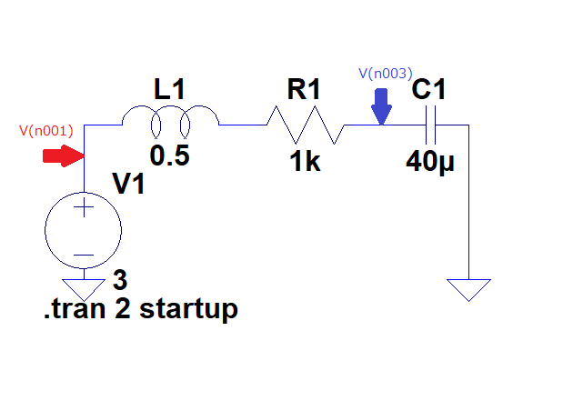
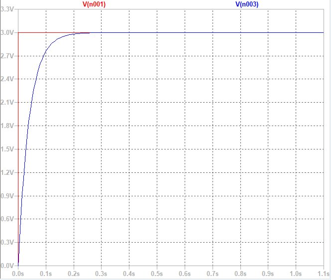

物理のノート
電磁気回路の基礎と応用
LRC回路とインピーダンス整合
LRC直列回路の回路方程式
電圧源$V_i(t)$を, 直列配置したLRC回路に接続する場合にコンデンサーCに蓄積される電気量$q(t)$を考える.
\begin{equation}
L\frac{d^2 q}{dt^2}+R\frac{dq}{dt}+\frac{1}{C}q=V_i(t)
\end{equation}

式(1)の両辺を時間t（$0$から$t$まで）で積分する.
\begin{equation}
L\frac{dq}{dt}+RI+\frac{1}{C}\int_0^t qdt=\int_0^t V_i dt=f_i(t)
\end{equation}
電流$I=\int_0^t dq $
式(2)の第1項をD（Differencial：微分）動作, 第2項をP（Proportional：比例）動作, 第3項をI（Integral：積分）動作と称する.
微分動作（D動作）は, LRC回路において位相を遅らせる遅相（インダクタンス）を表す. 一方, 積分動作（I動作）は進相（キャパシタンス）を意味する.

index.htmlに戻る